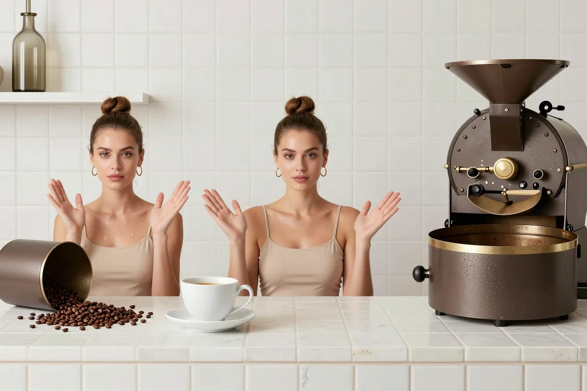

Et uttrykk av duggfrisk hud, en glatt knute, gullringer, nøytrale klær, hvite fliser og ryddige hyller. Det vokste på TikTok og Instagram i 2021 og 2022 og selger velvære, hud og rutine.

Kjerneidé
Vis ledig orden: en polert, nøytral flate antyder et rolig liv, og rutinen er produktet.
Designprinsipper
Sett bunnen i varm hvit (#FAF7F2) med beige (#E9DFD1) og en myk taupe (#9C8B7A) som støtte.
Bruk én gullaksent (#C8A25B) til ringer, streker og små merker, under 5 % av flaten.
Par en ren geometrisk sans med én fin displayseriff eller kursiv på 40px til 96px.
Fotografer hud, hender og gjenstander i mykt vindulys med 3 % bloom og en synlig glans på høylysene.
Ramm inn produkter på hvit flis, marmor eller lin, i rader på 3 med 24px mellomrom; behold et 4:5-utsnitt.
Vis rutiner som nummererte trinn: 01 Rens, 02 Fukt, 03 Glød, hver i en pill med 999px radius.
Rund alle hjørner med 24px eller mer og bruk bare skygger ved 6 % dekning.